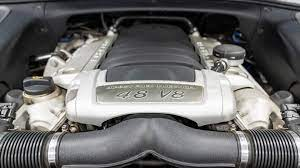
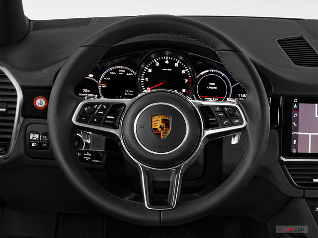
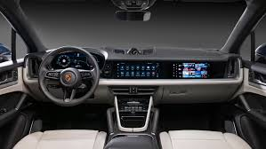

PORSCHE CAYENNE
ENGINE |
The Porsche Cayenne offers a range of powerful engines, from a turbocharged V6 to a twin-turbo V8. Each engine delivers strong performance, smooth power delivery, and the signature Porsche driving feel. |
WHEEL & TIRES
|
It rides on stylish, large-diameter alloy wheels paired with performance or all-season tires, providing excellent grip, comfort, and stability across various road conditions. |
STEERING |
The Cayenne features responsive, electromechanical power steering with optional rear-axle steering. This enhances agility at low speeds and improves stability at higher speeds. |
SEATS
|
Inside, you'll find luxurious, ergonomically designed seats with available options like 18-way adjustment, ventilation, and massage. They provide both comfort and support for long drives or spirited runs. |
BRAKES
|
Braking is powerful and precise, with standard high-performance brakes and available upgrades like Porsche Surface Coated Brakes (PSCB) or Porsche Ceramic Composite Brakes (PCCB) for enhanced stopping power. |
DRIVING TECHNOLOGY |
The Cayenne is equipped with advanced systems like Porsche Active Suspension Management (PASM), adaptive air suspension, and Porsche Traction Management (PTM). These technologies work together to deliver a smooth yet dynamic driving experience on any terrain. |